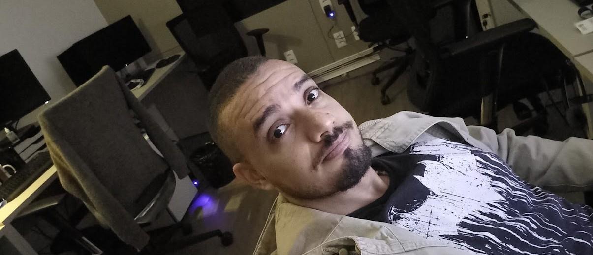

09 de setembro 2022
Uma nova era - Central SOL

Mais um desafio, uma nova atividade e uma nova função. De volta ao mundo da tecnologia. Grato por trabalhar nessa área e por trabalhar nessa empresa, onde pude conhecer pessoas especiais que me ajudaram a desenvolver o meu potencial.